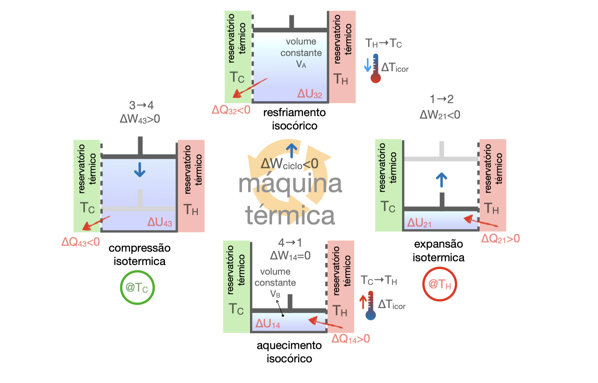
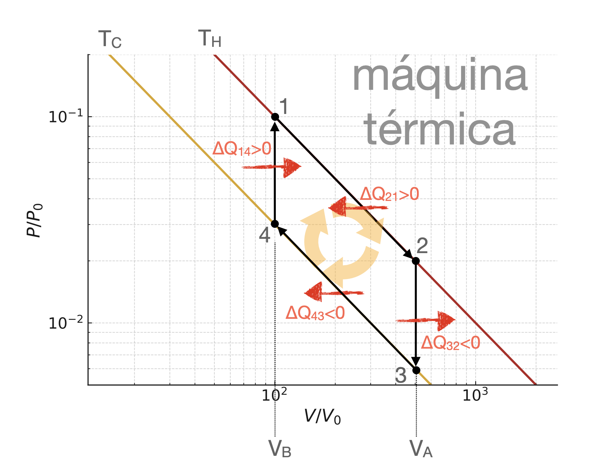

A máquina de Stirling sem regenerador possui duas isotermas e duas isocóricas. As isotermas são responsáveis pelo trabalho líquido; as isocóricas aquecem e resfriam o fluido a volume constante.

O ciclo de Stirling troca as adiabáticas de Carnot por isocóricas. Essa troca simplifica a sequência termodinâmica, mas altera a forma como o calor é transferido durante o ciclo.
Sem regenerador, as etapas isocóricas precisam trocar calor com reservatórios externos enquanto a temperatura do fluido varia. Essa troca em diferença finita de temperatura produz entropia e reduz a eficiência em relação ao ciclo de Carnot.
A máquina de Stirling sem regenerador possui duas isotermas e duas isocóricas. As isotermas são responsáveis pelo trabalho líquido; as isocóricas aquecem e resfriam o fluido a volume constante.

O fluido fica em contato com o reservatório quente e se expande a temperatura constante. Ele absorve calor da fonte quente e realiza trabalho sobre o exterior.
No caso geral, \(\Delta U_{21}\) não precisa ser nula apenas porque a transformação é isotérmica. O sinal negativo de \(\Delta W_{21}\) indica trabalho entregue pelo sistema.
O volume permanece fixo em \(V_A\), de modo que não há trabalho mecânico. O fluido rejeita calor para diminuir sua temperatura de \(T_H\) para \(T_C\).
Sem regenerador, esse calor é descarregado diretamente em um reservatório externo. Como a temperatura do fluido varia durante a etapa, a troca não ocorre de maneira reversível com um único reservatório térmico.
O fluido é comprimido em contato com o reservatório frio. O exterior realiza trabalho sobre o sistema, e o calor gerado nessa compressão é rejeitado para a fonte fria.
Essa etapa consome parte do trabalho produzido na expansão quente. O balanço líquido do ciclo depende da diferença entre as duas isotermas.
O volume permanece fixo em \(V_B\). O fluido recebe calor para retornar de \(T_C\) a \(T_H\), preparando a próxima expansão isotérmica.
Em uma máquina sem regenerador, esse calor precisa vir da fonte quente ou de uma fonte externa. Ele aumenta o calor de entrada do ciclo, mas não contribui diretamente para o trabalho mecânico.
No diagrama \(P(V)\), as isotermas aparecem como curvas (ou retas no diagrama log-log) e as isocóricas como segmentos verticais em volumes fixos. O sentido horário indica operação como máquina térmica.

Como o sistema retorna ao estado inicial, \(\Delta U_{ciclo}=0\). Assim, o trabalho líquido é determinado pela soma das trocas de calor:
A eficiência da máquina é
A diferença essencial em relação a Carnot está nas isocóricas. Sem regenerador, o calor de aquecimento \(\Delta Q_{14}\) precisa ser fornecido externamente e o calor de resfriamento \(\Delta Q_{32}\) é rejeitado externamente, sem produzir trabalho. Essas trocas ocorrem enquanto a temperatura do fluido varia, gerando produção de entropia. Por isso, mesmo mantendo isotermas bem controladas, o ciclo de Stirling sem regenerador é irreversível no conjunto e satisfaz